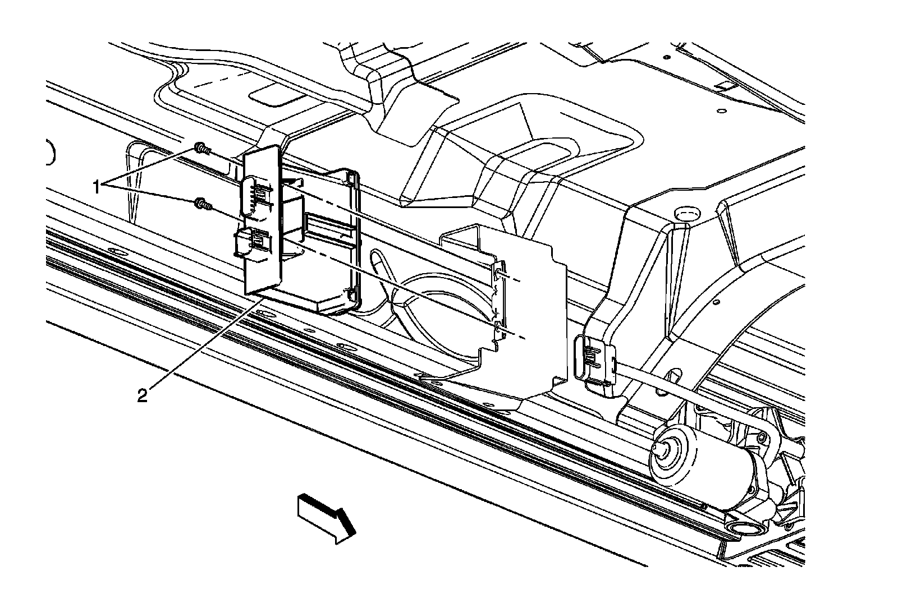
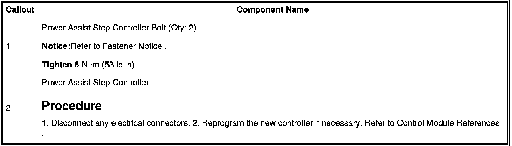

Operation CHARM
: Car repair manuals for everyone.
Home
>>
Cadillac
>>
2007
>>
Escalade ESV AWD V8-6.2L
>>
Repair and Diagnosis
>>
Body and Frame
>>
Relays and Modules - Body and Frame
>>
Auxiliary Step / Running Board Module
>>
Service and Repair
Auxiliary Step / Running Board Module: Service and Repair
Assist Step Controller Replacement


Notice:
Refer to.
Tighten
Procedure